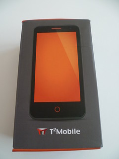
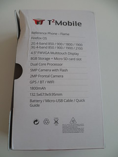
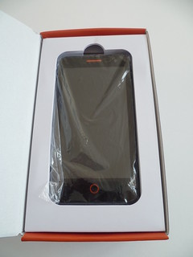
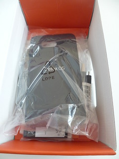
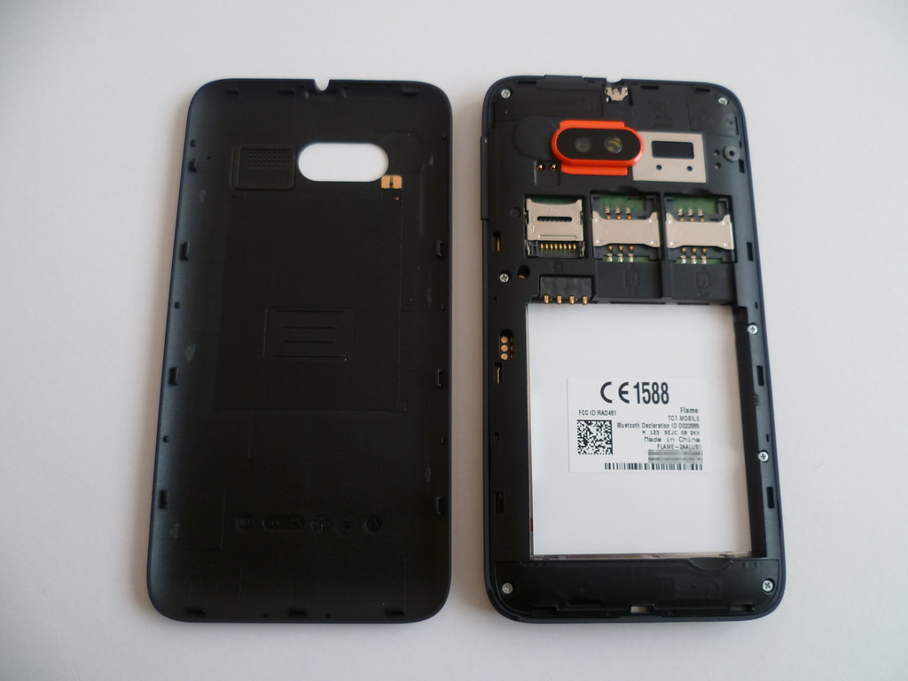
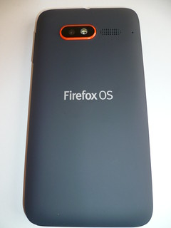
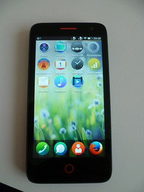
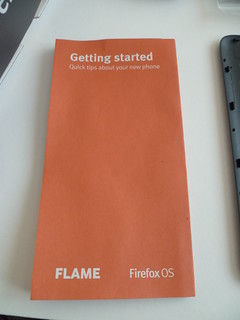

13 août 2014
Test du Firefox OS Flame

Reçu quasiment en même temps que ma tablette développeur, je vous fais aussi un test du nouveau téléphone développeur le « Firefox OS Flame ». Jusqu'à maintenant les téléphones développeurs accessibles au grand public étaient le Peak et Keon fabriqués par l'entreprise Espagnole, Geeksphone. Ces deux modèles ne sont plus fabriqués, ni disponibles à l'achat et sont remplacés par le « Geeksphone Revolution », un smartphone grand public avec une puce Intel et fonctionnant avec au choix Android ou Firefox OS. Avec l'évolution du marché de Firefox OS (notamment en France) ainsi que l'évolution de l'OS en lui-même, Mozilla propose un nouveau modèle de téléphone dit « téléphone référence » fabriqué en partenariat avec T2Mobile en marque Alcatel One Touch. Au contraire du Peak/Keon, Mozilla propose directement les builds du téléphone et assurera un meilleur suivi de l'appareil. Voici ses caractéristiques :- Processeur : Qualcomm MSM8210 Snapdragon, 1.2GHZ Dual core ;
- Écran : 4.5” (FWVGA 854×480 pixels) ;
- Appareil photo : arrière : 5MP avec auto-focus et flash / avant : 2MP ;
- Fréquences : GSM 850/900/1800/1900MHz UMTS 850/900/1900/2100MHz ;
- Capacité de stockage : 8 Go de stockage, lecteur MicroSD ;
- RAM : 256 Mo – 1 Go (ajustable par le développeur) ;
- Connectivité : A-GPS, NFC ;
- Pris en charge de deux cartes SIM ;
- Batterie : 1800 mAh ;
- WiFi : 802.11 b/g/n ;
- Bluetooth 3.0 ;
- Ports : Micro USB, casque (Jack).



La boîte contient : le téléphone, sa coque arrière, un câble microUSB, des écouteurs jack, la batterie amovible, un sticker et un guide rapide. Normalement, le Flame est aussi livré avec un câble USB spécial « Recovery », mais je ne l'ai pas reçu... un oubli sans doute. Il n'y a pas de chargeur, et je trouve que c'est une bonne chose, il suffit de réutiliser le chargeur USB de votre ancien téléphone si vous avez. On notera que c'est le premier modèle à prendre en charge le NFC, ainsi que le premier téléphone développeur à proposer deux emplacements SIM. En terme d'utilisation NFC, il est déjà possible d'échanger des fichiers entre deux téléphones ou encore d'utiliser des « tags » pour enregistrer et déclencher un numéro de téléphone notamment. On retrouve les boutons physiques, volume +/- (placé à droite), allumage (en haut), accueil (en bas), la prise microUSB (en bas) et prise jack (en haut). Je trouve cette disposition plus ergonomique que le Peak. La coque du téléphone est douce et semble plus résistante que celle du Peak. Ce qui frappe au démarrage, c'est la qualité de l'écran, bien meilleure que celui du Peak, on passe ici d'un écran 4.3'' a un écran 4.5''. Les appareils photo sont aussi de bien meilleure qualité.
Côté développeur, il est possible d'ajuster la RAM disponible au démarrage du téléphone, ce qui permet de tester ses applications pour des téléphones moins puissant. Le téléphone est livré en 1.3, mais il est possible de le mettre à jour via les builds proposées par Mozilla. Pour ma part, j'ai flashé une version 2.0 et le tout fonctionne très bien, c'est fluide et je peux utiliser des badges NFC. Le Flame peut être acheté sur le site Everbuying.com pour le prix de 128,17 € + 47 € de frais de douane (merci DHL !). Si vous avez déjà développé des applications HTML5 pour d'autres plate-formes, Mozilla met en place un programme pour obtenir un Flame. Un autre programme permet au Mozilliens d'obtenir un Flame pour faire des tests et répondre à des sondages pour améliorer Firefox OS.


Commentaires 10